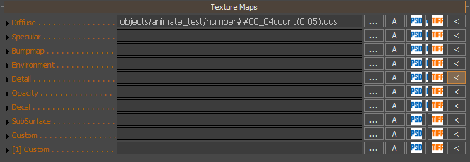
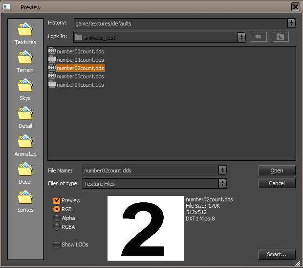

Обзор
Чтобы анимировать текстуры в Sandbox, вам нужно иметь определенное имя в редакторе материалов, например это.
Для практического примера загрузите этот образец пакета. animate_test.rar.
Именование в Material Editor
.../номер##ns_neсчитать(0.5).dds
- номер - Начало имени текстуры.
- ## - Цифры анимационной последовательности (два символа # означают две цифры анимационной последовательности).
- ns_ne - Это первый и последний номера анимационной последовательности соответственно.
- считать - Необязательное окончание имени текстуры.
- (0.5) - Дополнительное время одного кадра в секундах (значение по умолчанию: 0,05 секунды = 50 мс).

Вот пример текстуры в редакторе материалов: объекты/число##00_04count(0.5).dds
Сами названия текстур
Тогда реальные текстуры должны иметь следующие имена: number00count.tif, number01count.tif, ..., number05count.tif.
Также возможно использовать формат: номер00##. В этом случае движок попытается загрузить все текстуры с номером 0000 до последнего доступного файла текстуры.

Примеры файлов текстур